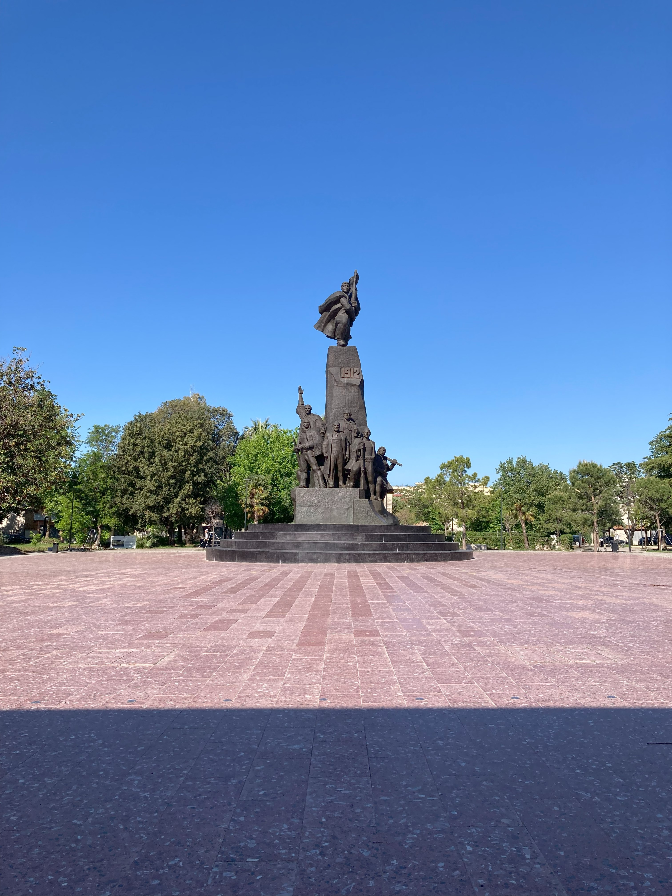
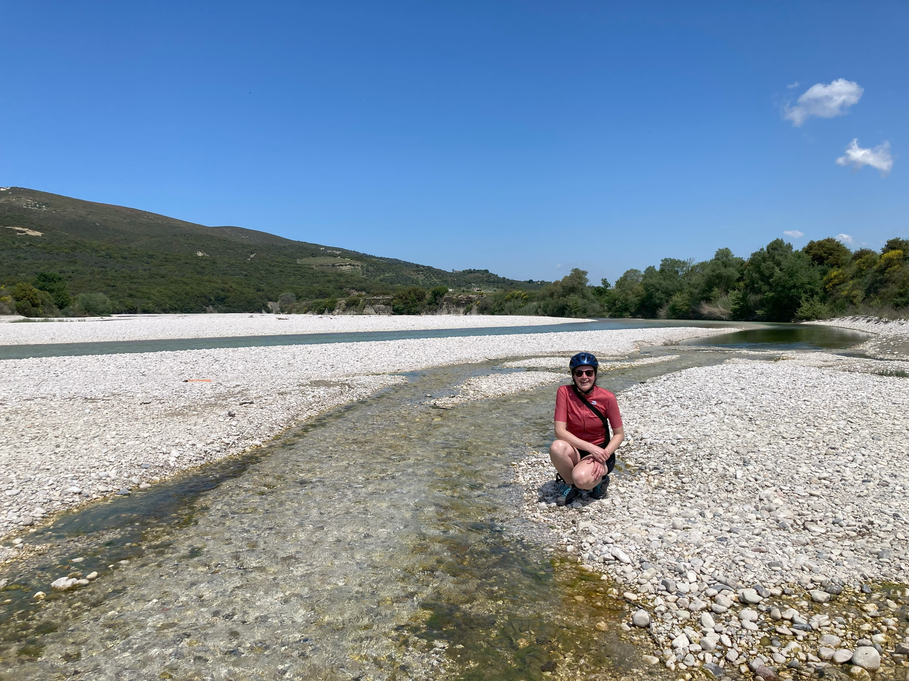
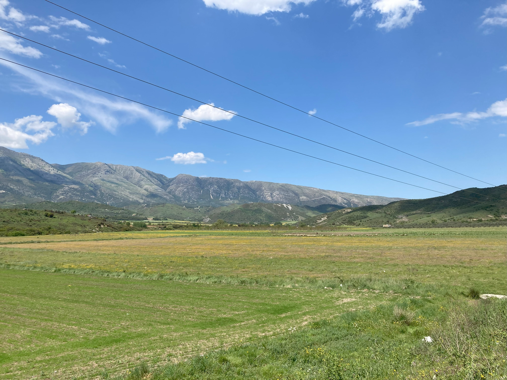
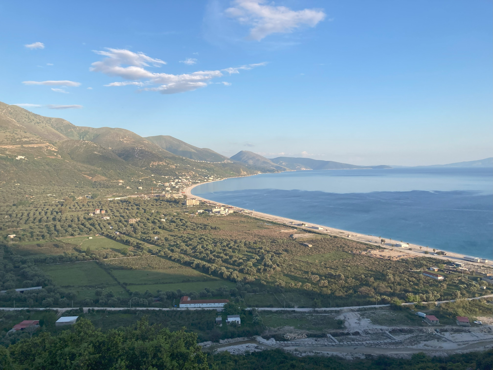
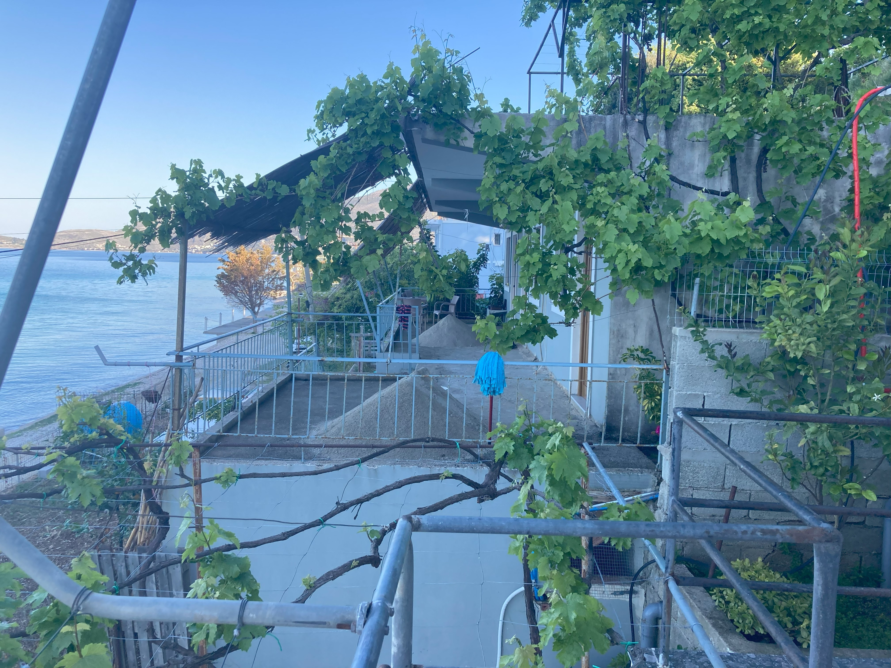
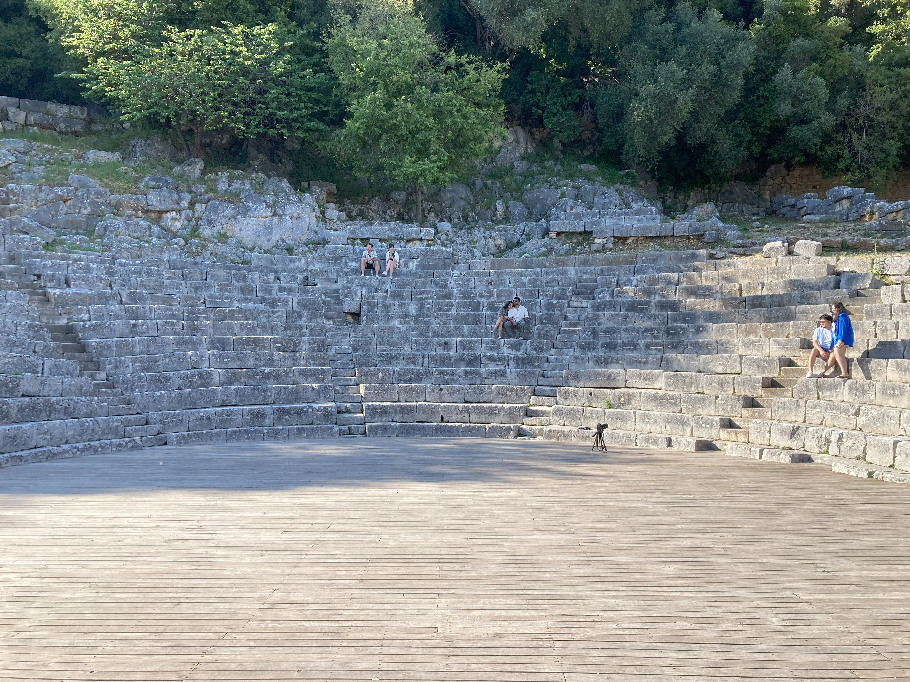
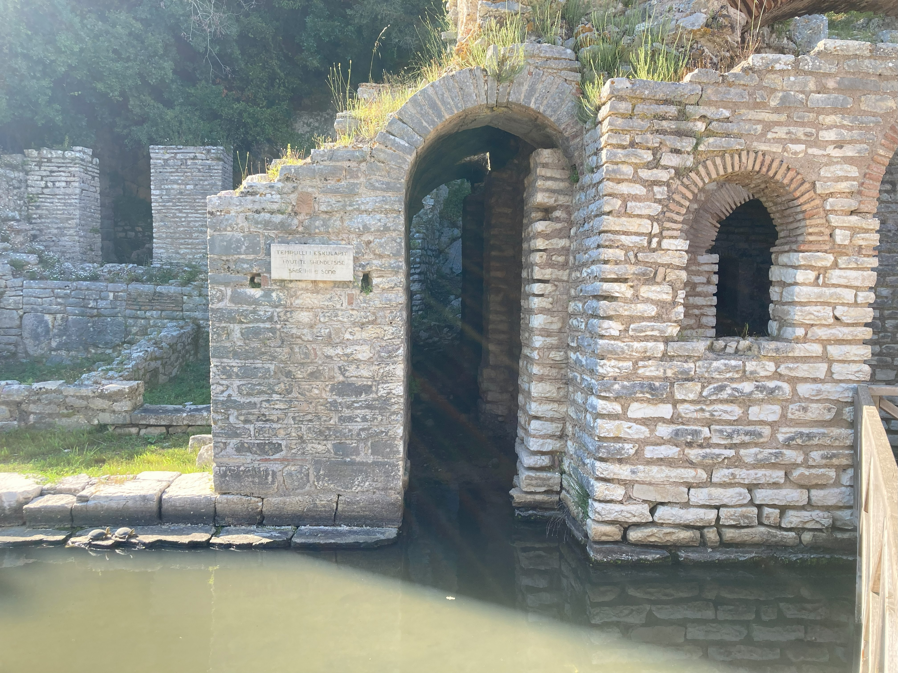

Albania 2025
1. Prima volta in Albania?
Valona (Vlorë) – Borsh
79km, 1320m di dislivello
È il 27 aprile e siamo arrivati in Albania, più precisamente a Valona, Vlorë, la città albanese geograficamente più vicina all’Italia. Scendiamo dalla Starlines proveniente da Brindisi molto più velocemente di quanto non vi siamo saliti. Il poliziotto albanese che ci controlla i documenti – stiamo comunque entrando in un Paese extra-UE – ci saluta con un cordiale “Prima volta in Albania?”.
Fuori dal porto, ci immettiamo nella vicina via principale, Rruga Sadik Zotaj, che seguiamo finché non arriviamo in centro città; passiamo davanti alla prima moschea del nostro giro, Xhamia Muradie, e al primo, imponente monumento all’Albania indipendente del 1912, creato dal padre scultore di Edi Rama, l’attuale premier albanese. La città ci sembra molto vivace, c’è tanta gente a passeggio e nei bar, dove ci si trova per giocare a carte e fare due chiacchiere.

Ci mettiamo subito alla ricerca di un posto dove cambiare valuta e di un negozio della One, dove comprare due SIM. (Se dopo aver letto il blog, doveste voler visitare l’Albania, ve la consigliamo: la copertura della One è stata ottima in tutte le zone dell’Albania che abbiamo attraversato.) Le SIM “per turisti” vengono attivate nel giro di mezz’ora. Sfruttiamo il tempo per fare un giretto in città: Dopo aver attraversato l’Italia in un giorno uggioso di pioggia, ci godiamo il sole e ci riempiamo gli occhi del “nuovo” che ci circonda, addentrandoci nella città. Oltre la Rruga principale, ci aspetta la vera anima di Valona. Con la merce dei negozi e di tanti venditori ambulanti esposta sui larghi marciapiedi – Valona ci sembra un grande mercato all’aria aperta! Pur essendo domenica, la città brulica di commercianti e compratori: sui marciapiedi si vende di tutto, dalle ciabatte adidas alle magliette, dai libri alle galline (tante galline, vive!), dagli elettrodomestici riparati alla verdura fresca dal campo.
Sentiamo tanti clacson, che ci accompagneranno per tutto il viaggio, e vediamo i primi cani randagi. Prendiamo un caffè, pagato 60 centesimi l’uno, al Bar Kevi, un piccolo bar che trova in una piazza tranquilla, dove i bambini giocano a pallone e gli anziani trascorrono le giornate chiacchierando davanti a un kafe e forse anche un raki o due. Il barista che ha vissuto a lungo in Italia ci fa subito sentire a casa, dicendoci “l’italiano è la seconda lingua dell’Albania. A Valona c’è una grande comunità italiana, in città abitano circa 1.500 italiani”.
Dopo aver assaggiato degli ottimi biscotti di un panificio di quartiere – paghiamo 50 centesimi per 6 biscotti grandi come una mano – anche la signora panificio, pur parlando solo qualche parola di italiano, è molto cordiale. Le si illuminano gli occhi quando Le spiego che siamo venuti a scoprire il loro Paese in bicicletta, mi racconta che quando i suoi bimbi erano piccoli andavano sempre in bici e ci augura buon viaggio.
Seguendo la SH76 che ci porta subito in quota, ci lasciamo alle spalle Valona, pensando alle nostre prime impressioni di questo Paese, così vicino eppure così lontano nell’immaginario comune italiano. Seguiremo la SH76 fino a Qeparo, sulla costa, dove ci immettiamo poi sulla SH8 in direzione Borsh.
Il traffico si fa sempre meno intenso, e dopo poco, iniziamo a seguire il primo fiume del giro, il Shushice. Ci sembra bellissimo, perché diversamente dall’Italia, dove i fiumi ormai sono tutti incanalati e costretti a seguire il percorso tracciato dall’uomo, con i suoi numerosi meandri, il Shushice ci sembra un fiume veramente libero.


Ci fermiamo all’altezza di Giormit per pranzare all’ombra del vecchio ponte. Subito dopo pranzo ci imbattiamo in tre cani rabbiosi, per fortuna due si fermano quasi subito, ma il terzo ci segue per un bel po’ e non sembra voler fare amicizia. Con calma, iniziamo a pedalare, e finalmente il cane si allontana. Scopriamo così che noi ciclisti ai cani da guardia, soprattutto a quelli soli, perché il pastore si è momentaneamente assentato, ma con un gregge a cui badare, non stiamo proprio simpatici simpatici.
Attraversiamo una valle tranquilla, con qualche abitazione qua e là, e iniziamo a vedere le prime greggi. Nel corso del viaggio ne vedremo tantissime, greggi grandi e piccoli, con o senza pastore, con o senza cani di guardiania. A un certo punto, lungo un pascolo che costeggia il lato sinistro della strada, il gregge si trova nel punto più lontano da noi, con la coda dell’occhio vediamo due cani che partono a tutta velocità e attraversano in verticale tutto il pascolo. Per nostra fortuna o sfortuna, la strada è in discesa, quindi siamo abbastanza veloci anche noi… li abbiamo visti arrivare troppo tardi per fermarci ora, sembrano furiosi. Iniziamo a pedalare alla più non posso, e per fortuna dietro alla curva non ci attende un’altra salita … sarebbe finita male!
Da questo momento in poi saremo vigili, sempre concentrati per anticipare i movimenti dei cani presenti; seguiamo anche il consiglio letto su vari blog – scendiamo dalle bici, le poniamo come scudo tra noi e il cane/i cani e proseguiamo a piedi, parlando all’animale per tranquillizzarlo, senza guardarlo mai negli occhi. Grazie a questi piccoli ma fondamentali accorgimento arriviamo sani e salvi alla fine del cicloviaggio. Nel corso del viaggio ognuno ha un consiglio su come liberarsi dai cani: c’è chi dice di gettare loro dell’acqua in faccia, chi di far finta di lanciare una pietra, chi giura di riuscire a intimidirli con un bastone… tutti metodi che non ci convincono del tutto e che per fortuna non abbiamo dovuto testare.
La valle è tranquilla, ci sono alcuni alberghi e due campeggi, un bar lungo la strada – infrastrutture per turisti, tutte aperte da poco. Ci riempiamo gli occhi del paesaggio montano, delle tante greggi e dei pastori che ci salutano e che sono i veri guardiani e testimoni di queste montagne, dei meandri del fiume, prima di affrontare l’ultima lunga salita di questo primo giorno. La discesa verso Borsh è molto bella, il paesaggio cambia piano piano, gli ampi pascoli montani si trasformano in estensioni di uliveti e di fiori gialli, fino a quando non si incomincia a intravedere il mare e l’isola di Corfù in lontananza.
A Qeparo, sono ormai le 17 passate quando vi arriviamo, chiamiamo un bed and breakfast per prenotare una camera nella vicina Borsh.

Il proprietario è molto disponibile, pur non trovandosi sul posto in quel momento, mi dice che parlerà con sua sorella e che mi richiamerà tra cinque minuti. Alla fine, ci organizza un pernottamento nell’appartamento per ferie della sorella, Sea La Vie Anesti – paghiamo 40€ in due per un alloggio pulitissimo e con un letto comodo, colazione esclusa. Cena a base di pesce al ristorante dell’albergo Ciao Borshi.
Siamo più che soddisfatti di questa prima giornata e andiamo a dormire con la testa piena di nuove immagini. Oltre la gentilezza e disponibilità degli albanesi, in questa prima sera abbiamo avuto modo di osservare anche la loro fervida attività edilizia. A Borsh ci sono tante nuove costruzioni, hotel e edifici residenziali/per turisti in primis – tra cinque anni non sarà più la Borsh con i cavalli che trottano lungo la strada principale e gran parte delle strade secondarie non asfaltate che abbiamo visto noi. Insomma, ci rendiamo conto sin da subito che nel 2025 ovunque si guardi, l’Albania è un grande cantiere all’aria aperta.

2. Kalimera!
Borsh – Ksamil
51,5km, 940m di dislivello
Iniziamo la giornata con la nostra prima colazione in Albania: a base di omelette e feta, al bar del ristorante Ciao Borshi, con una vista fantasica sulla baia di Borsh e sul mar Ionio. A fine aprile il mare è ancora freddo, anche perché fino a metà aprile a queste latitudini generalmente piove molto, ma le temperature di giorno raggiungono già i 28 gradi. Agli habitué del posto seduti al tavolo a fianco, si aggiunge un signore greco che saluta con un cordiale “Kalimera!”, prima di sedersi e di ordinare un raki, un bel bicchierone, di quelli che si usano per l’acqua per capirci. Lo beve tutto di un fiato, e con quello che rimane nel bicchiere si disinfetta le mani! Scopriamo così, con stupore, che il raki è una bevanda dalle proprietà inaspettate: Oltre che da bibita funge anche da disinfettante; in effetti, trattandosi di un distillato, il raki comunemente raggiunge una percentuale alcolica molto alta, che parte dal 45%. Salutiamo Borsh e imbocchiamo una strada ghiaiosa che ci porta in quota e che ci ricongiunge alla SH76. È molto ripida e spingiamo le bici per la maggior parte del tracciato. Anche oggi ci attendono quasi 1.000 m di dislivello. Ci fermiamo per comprare delle banane, dell’acqua e assaggiare dei dolci albanesi, llokume al cocco, nonché i baklava alle noci a un distributore, e più tardi, per pranzo a Shënvasil, dove prendiamo due caffè e assaggiamo i primi byrek, davvero squisiti, al Furrë Buke Shkrepa. La giornata è caratterizzata da un saliscendi lungo la costa, con vista sull’isola di Corfù. La strada a fine aprile è poco trafficata, ma probabilmente in estate non è così, trattandosi della strada costiera. A Saranda è in corso un’attività edilizia (a scopi turistici) sfrenata. Ovunque si guardi, vengono costruiti non hotel, ma interi resort turistici e sicuramente tra qualche anno sarà una città completamente diversa da oggi. Da Saranda fino a Ksamil il traffico si fa più intenso, e ci sentiamo un po’ esposti al pericolo, perché su questo tratto di strada tutti sembrano avere fretta e non c’è una corsia laterale. Tutto il nostro viaggio si svolge su strada, perché in Albania ad oggi ci sono pochissime ciclabili (molto brevi); tuttavia, oltre a questo tratto di strada, ci siamo sempre sentiti in sicurezza e rispettati dagli autisti. A Ksamil abbiamo prenotato un alloggio a gestione familiare su Airbnb, Violeta, aperto da poco; ci accoglie una comitiva tutta al femminile – la nonna e una nipote che parla un inglese perfetto. La camera è molto pulita, il bagno decorato con piastrelle di finto marmo, e possiamo parcheggiare le bici in un’altra camera non occupata. È il primo alloggio che ci sembra essere a conduzione meramente femminile! Generalmente in Albania, per strada, abbiamo visto più uomini che donne, e a volte i camerieri si sono rivolti a Davide, anche se ero io ad aver fatto una domanda o a pagare. Questo ci ha dato l’impressione che le donne siano un po’ relegate alla sfera privata. Mi chiedo come sarebbe attraversarla da sola o con un’altra amica femmina. Lasciamo i bagagli in alloggio e andiamo a visitare il Parco Nazionale di Butrinto, un vero gioiello! Ne vale veramente la pena, anche per scoprire qualcosina in più sulla storia di questa parte dell’Albania, a due passi dalla Grecia, dove sono passati i romani, i veneziani, gli ottomani ecc.
Il Parco Nazionale che circonda Butrinto è molto bello. Passeggiando per Butrinto ci accompagnano l’allegro cinguettio degli uccelli e il gracchiare delle rane.




Torntati a Ksamil ci rendiamo conto che anche qui è in corso una fervida attività edilizia a scopo turistico e anche residenziale (villette mono- o bifamiliari), ma un po’ meno spinta rispetto a Saranda. In questa zona dell’Albania vediamo moltissime targhe inglesi, di albanesi residenti nel Regno Unito. Ceniamo al ristorante Fisherman’s Grill (polipo e calamaro – buonissimi!) e assaggiamo la birra Elbar che diventerà la nostra birra preferita, dopo la Saraçi di Korçe.
3. Da Ksamil ad Argirocastro
Ksamil – Argirocastro
65,2km, 1030m di dislivello
Alla ricerca di un posto dove fare colazione, verso le 7.30 passiamo al panificio Sea La Vie Bakery (un’altra trasliterazione di “c’est la vie”?). Rimaniamo un po’ sorpresi perché la vetrina è vuota; da dietro la vetrina ci saluta in inglese il figlio del titolare, avrà forse 8 anni, che poco dopo partirà per andare a scuola, che ci dice “Byrek pronto tra 2 minuti” e ci guarda con occhi tristi quando andiamo via per comprare due cose al supermercato. Torniamo dieci minuti dopo per assaggiare diversi tipi di byrek, quello classico con la feta, uno ripieno di spinaci e uno alla carne. Quello della Sea La Vie Bakery è stato senza dubbio il migliore dei buonissimi byrek di tutto il giro! I primi chilometri per uscire da Ksamil sono gli stessi del giorno precedente. La mattina c’è un po’ meno traffico che la sera, ma siamo comunque contenti quando possiamo imboccare un’altra strada. Nella zona tra Ksamil e Jorgucat i cartelli stradali e i toponimi sono bilingui, in greco e albanese. Non siamo lontani dal confine.
Ci fermiamo a Mesopotam per visitare la chiesa bizantina di San Nicola, costruita presumibilmente attorno al 1224, la quale si distingue per le sue due absidi che suggeriscono un uso condiviso tra il rito cattolico e quello ortodosso. La chiesa è molto bella, ma avrebbe bisogno di essere rimessa a posto un pochino per poter tornare a splendere come un tempo. Proseguiamo in direzione Syri i Kaltër, conosciuto anche come Blue Eye. Lungo la strada facciamo la conoscenza di Thomas, un ragazzo irlandese che è in viaggio da sei mesi trascorsi in sella tra Turchia, Grecia, Libano, Siria e Albania, e di due ragazze canadesi. Poco prima del Blue Eye è stato allestito un enorme parcheggio per i numerosi turisti, per lo più stranieri; per entrare bisogna pagare una tassa – ci ricorda un pochino il Lago di Braies in estate.